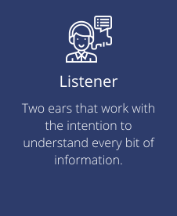
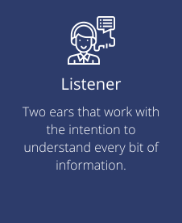

Graduated in Communication and Multimedia I was always interested in the technology area. During university, in 2011, my focus was on the audiovisual area, exploring how storytelling on transmedia projects can affect people's life. At that time I had interesting design-related classes, where I could start understanding how design and the communication area can bring better experiences for users.
Today working as a UX Designer, I'm always going after the best experience for users and the best results from my work. To achieve that, I believe it is important to have a continuous learning mindset as my mother would say “If you are the smartest person in the room, then you are in the wrong room.”
To help follow this learning mindset I consider sports as an important part of my life. During my free time, this is what makes me relax and organize my ideas. I love biking, rowing, and sailing because it teaches me how to be present and focus in order to achieve my goals.
I’m based in Zaandam, but originally from São Paulo, Brazil.
 
